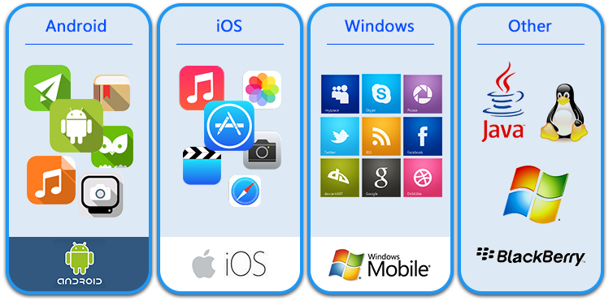

按钮
首页
服务介绍
行业方案
合作发展
联系我们
服务体系介绍
Service system introduction
体系分布
Distribution system
安全加固及数据加密
安全感知产品与服务
安全检测产品与服务
安全加固及数据加密
移动应用安全加固
针对目前移动应用普遍存在的破解、篡改、盗版、钓鱼欺诈、内存调试、数据窃取等各类安全风险， 公司为开发者提供全面的移动应用加固加密技术和攻击防范服务

移动应用源代码加固
未经混淆的源代码受到攻击后，易暴露程序中关键算法、核心业务逻辑、数据结构和模块的控制流布局等敏感内容.
安全密钥白盒
未目前使用的基于Key的AES、DES、SM4等传统加密算法已不再安全，攻击者通过控制软件的运行环境（如CPU、内存、寄存器等）实现对密钥的白盒攻击、破解
安全软键盘SDK
全流程、多层次、立体化保护信息数据输入安全.
防界面劫持SDK
利用仿冒的界面覆盖、替换App原界面来进行钓鱼欺诈，正在成为一种流行的App恶意攻击方式，即界面劫持攻击.
安全感知产品与服务
渠道监测及响应
全网渠道覆盖，智能化数据监测与分析，帮助企业及时了解各类新增盗版应用情况.
移动威胁感知服务
构建企业移动威胁感知体系，防刷单、抢单、刷积分、欺诈校验等黑产风险.
漏洞监测及响应
为企业提供安全漏洞监测服务，建立漏洞风险快速响应机制.
业务流审计系统
捕获伪装成正常流量的各种隐藏性攻击，保护金融、电商、政府、物联网等行业业务系统安全
安全检测产品与服务
移动应用渗透性测试
检验移动应用系统和业务逻辑的脆弱性和有效性.
移动应用测评云平台
检测App内部存在的安全风险、漏洞，对发现的安全问题给出解决建议，帮助开发者了解并提高其开发程序的安全性。
cslgit©2016 Bootstrap 响应式网络安全服务 | 版权所有️
联系我们
公司地址
服务声明